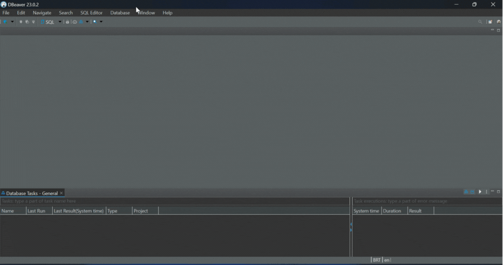

Configurar e Acessar Remotamente sua Máquina Virtual (VM)
Criação da VM
O primeiro passo é criar uma conta na Oracle Cloud é permitido ter 1 VM gratuita com até 40GB. Vou deixar como recomendação que siga o tutorial desse video.
Requisitos de Instalação SSH (windows)
- Baixar OpenSSH
- Extrair Pasta
- Abrir o Arquivo
scp.exe - Clicar com botão direito e selecionar a opção de abrir via terminal.
- Digitar Comando no Terminal
.\ssh.exe -i .\ssh-key-2023-05-05.keyUSER@IP_DA_MAQUINA
Instale o Postgres
Atualizar a lista de pacotes e instalar o PostgreSQL:
sudo apt update
sudo apt install postgresql postgresql-contrib
Verificar o status do serviço PostgreSQL:
sudo systemctl status postgresql
Isso deve mostrar que o PostgreSQL está ativo e em execução. Se não estiver, você pode iniciar o serviço com:
sudo systemctl start postgresql
Habilitando acesso remoto ao postgres
Primeiros Passos
Vamos alterar a senha do usuario admin do postgres
Digite no terminal
sudo -u postgres psql
O resultado desse comando será:
postgres=# alter user postgres encrypted password '12345';
(Altere a senha de acesso conforme a sua preferência)
Em seguida digite \q para sair
Alterando arquivo de configuração do postgres
- Entre no terminal e digite :
sudo nano /etc/postgresql/versao_do_postgres/main/postgresql.conf
Exemplo
~$ sudo nano /etc/postgresql
~$ sudo nano /etc/postgresql/14/main/
~$ sudo nano /etc/postgresql/14/main/
~$ sudo nano /etc/postgresql/14/main/postgresql.conf
Altere seguinte linha:
Na Linha :
### - Connection Settings -
#listen_addresses = 'localhost' # what IP address(es) to listen on;
Alterar Para:
### - Connection Settings -
listen_addresses = '*' # what IP address(es) to listen on;
Para sair do arquivo digite crtl + X
Para confirmar alteração Y
Por fim digite Enter novamente
- Precisamos editar também o arquivo pg_hba.conf portanto no terminal digite:
sudo nano /etc/postgresql/versao_do_postgres/main/pg_hba.conf
Na linha:
# "local" is for Unix domain socket connections only
local all all peer
Alterar para:
# "local" is for Unix domain socket connections only
local all all trust
Na Linha:
# IPv4 local connections:
host all all 127.0.0.1/32 md5
Alterar para:
# IPv4 local connections:
host all all 0.0.0.0/0 md5
Para sair do arquivo digite crtl + X
Para confirmar alteração Y
Por fim digite Enter novamente
- Reinicie o PostgreSQL para aplicar as mudanças:
sudo systemctl restart postgresql
Habilitando porta na Oracle
Desabilitar Firewall
O postgres vem por padrão com o firewall desabilitado, isso significa que não será possivel estabelecer uma conexão remota no Dbeaver. Portanto para corrigir esse problema digite no terminal:
sudo ufw disable
sudo apt install firewalld
sudo systemctl enable firewalld
Selecione o numero da porta que deseja habilitar eu escolhi habilitar a '5432'
sudo firewall-cmd --permanent --zone=public --add-port=/tcp
sudo firewall-cmd --reload
Criar DataBase call center
sudo -u postgres
postgres@sever:~$ adm_callcenter
sudo adduser adm_callcenter
OUTPUT
Enter name of role to add: sammy
Shall the new role be a superuser? (y/n) y
OUTPUT
Adding user `adm_callcenter' ...
Adding new group `adm_callcenter' (1002) ...
Adding new user `adm_callcenter' (1002) with group `adm_callcenter' ...
Creating home directory `/home/adm_callcenter' ...
Copying files from `/etc/skel' ...
New password:
Retype new password:
Sorry, passwords do not match.
passwd: Authentication token manipulation error
passwd: password unchanged
Try again? [y/N] y
New password:
Retype new password:
passwd: password updated successfully
Changing the user information for adm_callcenter
Enter the new value, or press ENTER for the default
Full Name []: callcenter
Room Number []:
Work Phone []:
Home Phone []:
Other []:
Is the information correct? [Y/n] y
Testando conexão com acesso remoto no Dbeaver
- Instale o Dbeaver
- Faça a conexão conforme o gif abaixo, usando: 
- O IP da sua VM disponivel no site da Oracle Cloud,
- O usuario postgres
- A sua senha que configuramos no inicio.
(Para demo acima foram usados dados IP ficticícios )